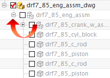

Use the On View Selection option
You can use a drafting preference to load a component ‘on demand’ as you apply a dimension to its faceted representation. The On View Selection preference determines whether or not components are loaded into your session as you apply a dimension to a lightweight view.
-
Choose Preferences→Drafting.
-
On the View tab, in the Lightweight Drawing Views group, under Load Component, make sure that:
On View Selection
=

-
Click OK.
This option is preset by the customer default Load Component on Selection. In the Customer Defaults dialog box, refer to the Drafting→General→View tab.
-
Open the Assembly Navigator, and then pin it in place.
-
Expand the drf7_85_eng_assm node.

Caution
Do not inadvertently load the assembly model by selecting its check box.